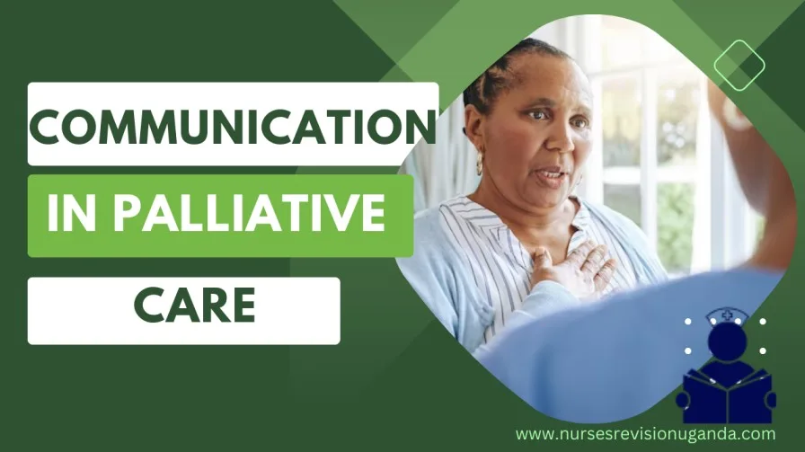
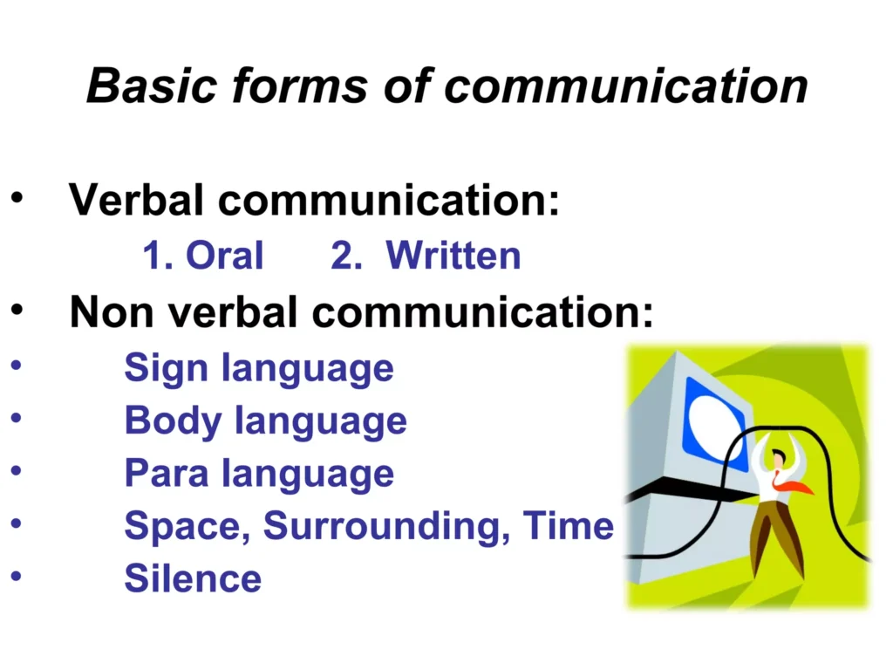

Expanded Nursing Uganda Explanation
Communication/ Preparation of the family to make important decisions should be reviewed through safe maternal and newborn assessment, early recognition of danger signs, respectful communication and timely referral. Connect the definition to vital signs, bleeding, fetal or newborn wellbeing, patient education and local protocol requirements.
Contents — 16 sections (tap to expand)
01 **COMMUNICATION IN PALLIATIVE CARE**
Communication (as a generic process) is a two-way process between two or more persons in which ideas, feelings and information are shared, with the ultimate aim of reducing uncertainties and clarifying issues.
Communication only becomes complete when there is feedback.
02 **Types of communication**
- Verbal communication is the exchange of ideas through spoken expression in words. It is a medium for communication that can entail using the spoken word, such as talking face-to-face, on a telephone, or through a formal speech; similar communication can occur through writing.
- Non-verbal communication involves the expression of ideas, thoughts or feelings without the spoken or written word. This is generally expressed in the form of body language that includes gestures and facial expressions and, where appropriate, touches .
NB: Both verbal and non-verbal communication is important in palliative care.
NB : Little communication actually takes place verbally, facial expressions, gestures and posture form most of our communication and are a graphic part of our culture and language. Studies show that during interpersonal communication 7% of the message is verbally communicated, while 93% is non-verbally transmitted. Of the 93% non-verbal communication:
- ∙ 38% is through vocal tones
- ∙ 55% is through facial expressions
03 **Major skills in communication**
These include the following
- Listening
- Checking Understanding
- Asking Questions
- Answering Questions
04 **Listening**
The first and perhaps the most important skill is to be a good listener. We have to be able to listen in order to understand the patient and family needs.
How well do we listen?
Show that you are listening by using the following techniques:
- Pay attention to the person you are communicating to.
- Use body language to show that you are paying attention.
NB : The following acronym can help to remember the key points about suitable body language that indicates paying attention: (ROLES)
ROLES :
- Technique Description
- R – Relaxed Stay relaxed and avoid tense or rigid body postures.
- O – Open Maintain an open posture, with arms uncrossed and relaxed.
- L – Lean forward Lean slightly towards the person to show interest and engagement.
- E – Eye contact Maintain consistent eye contact to convey attentiveness.
- S – Sit near Position yourself close to the person to create a sense of closeness and connection.
Tips for Effective Listening
- Encourage the person to talk and show your engagement by nodding or using appropriate facial expressions.
- Avoid behaviors that indicate boredom or impatience, such as yawning, fidgeting, or looking around.
- Pay attention to the person’s non-verbal cues and reactions to better understand their feelings.
- Use silence constructively and allow the person time to gather their thoughts without rushing them.
- a. It is important not to interrupt when the person is speaking. Listen attentively and try to understand their verbal message.
- b. Make an effort to remember accurately what the person has said.
- c. Listen with empathy, putting yourself in their shoes and refraining from judgment.
Barriers to Effective Listening:
- Distractions: Avoid being distracted by things like ringing phones or people entering the room.
- Judgmental fixations: Refrain from imposing personal values or moral judgments on the patient, particularly religious beliefs.
- Filtered listening: Be aware of how your own experiences, culture, and background may influence the way you interpret what you hear.
- Prejudice and preconceived bias: Guard against judging others based on their appearance, tribe, gender, or profession.
Checking understanding
It is important to check that we have understood them correctly as it:
- Let them know we have been listening carefully.
- Lets them know we are trying to understand.
- Gives an opportunity to them to think again about the problem.
- Helps them to think about how to cope with the problem.
How do we check understanding?
- Paraphrasing what the parson has said as key points during the conversation, by using words like; You have told me that
- Clarifying what the person has said, by checking you have understood correctly using words like, ‘So, you mentioned you are worried about three things but school fees is the biggest problem, is that right ?”
- Reflecting by identifying the feelings of the person, using words like, It seems you are very worried about this
- Summarizing: This happens during and at the end of the conversation. Expressing in brief and highlighting the key points of the story the person has told you.
Asking Questions
We ask questions in order to help the person:
- Explore his/her problems more fully.
- Think more about his/her situation and perhaps find a way of coping with their problems.
- Explain what she already knows or understands about a situation i.e. facts about HIV/ cancer
- See that we are trying to understand them and the problem they are facing.
- Prioritize problems and thus help to focus the session.
- Move at their pace and enable dialogue between the counselor and the person seeking help. How do we ask questions?
There are two kinds of questions:
- Closed questions : These questions usually receive no more than a ‘Yes’ or “No” answer and are generally very specific e.g. Are you married? ’No’: ‘Do you have pain” “Yes’.
- Open ended questions : These are questions which invite a person to talk and explain. They usually begin with; What, Where, When, Row? e.g. How did you feel when you were told your diagnosis? Open ended questions permit the person to choose how to respond, and examine the situation more clearly.
Points to remember when asking questions
- It is helpful to use a mixture of open and dosed ended questions. Closed questions help to structure the session and identify facts, and open questions help the patient to express feelings, opinions and experiences.
- Ask one question at a time, it is confusing to ask so many questions at a go.
- Use key words from the person’s explanation to phrase another question.
- Be tactful when asking personal or sensitive questions as it can take time to develop trust, and some questions can be asked later once trust has built up.
- Use simple and clear language when asking questions.
Answering Questions
Points to remember when answering questions
- Behind every question, there is usually a problem, worry or concern’.
- Avoid answering “Yes” or ‘No’. It does not help the health professional to effectively understand the client’s situation or what the patient and family know about their illness.
- When answering the clients’ questions or discussing the clients’ concerns, give information rather than advice or false reassurance.
- Avoid suggesting to the patient and family what to do, but put forward a suggestion for discussion,
- Always give accurate information. Be honest, it is alright to say. ‘‘I don’t know”.
- Answer questions using simple and clear language. Complicated medical jargon can confuse the patient and their family.
- After giving information, check whether the person has understood the information and ask the person what he intends to do about the situation?
- Remember people ask questions when seeking for help.
- Sometimes there is no obvious answer’ to give a question, such as ‘Why has God done this to me?” but listening to the patient and helping then, explore the feelings behind this statement can be very helpful to him/her.
05 **Qualities and Attitudes for Effective Communication in Palliative Care**
Effective communication is essential for providing quality care to patients and their families in palliative care. Care providers who possess the following qualities and attitudes are more likely to achieve positive outcomes:
- Desire to help. Care providers should have a genuine desire to assist patients and their families.
- Patience. Care providers should be patient and allow patients to express themselves at their own pace.
- Honesty. Care providers should be truthful and sincere in their interactions with patients and their families.
- Genuineness. Care providers should be authentic and free from pretense.
- Openness. Care providers should be open-minded and receptive to different perspectives.
- Dependability. Care providers should provide accurate and clear information to build trust and facilitate future communication.
- Ability to put others at ease. Care providers should be able to create rapport and make patients feel comfortable.
- Respect for others and their decisions. Care providers should treat each patient as an individual and respect their beliefs and values.
- Positive attitude. Care providers should be non-judgmental, accepting, caring, empathetic, and respectful.
In addition to possessing the qualities and attitudes listed above, care providers should follow these principles for effective communication in palliative care:
- Communicate with sensitivity. Care providers should be empathetic and compassionate when communicating with patients and their families.
- Listen attentively. Care providers should allow patients to express their emotions and concerns without interruption.
- Check for understanding. Care providers should confirm that patients and their families understand the information that is being communicated.
- Consider cultural and religious factors. Care providers should be aware of the cultural and religious backgrounds of patients and their families and tailor their communication accordingly.
- Hold family meetings. Family meetings can be a valuable way to gather information about patients’ needs and preferences, as well as to build rapport with family members.
- Offer debriefing. Care providers who have provided care to patients who have died may benefit from debriefing to process their emotions and experiences.
- Pay attention to nonverbal cues. Care providers should be aware of nonverbal cues, such as facial expressions and body language, which can provide important information about patients’ thoughts and feelings.
- Use clear and simple language. Care providers should use language that is easy for patients to understand.
- Ask open-ended questions. Care providers should ask open-ended questions to encourage patients to share their thoughts and feelings.
- Summarize and clarify. Care providers should summarize and clarify information to ensure that patients and their families understand.
- Address communication barriers. Care providers should be aware of potential communication barriers, such as language, culture, and disability, and take steps to address them.
06 **Benefits of Effective Communication in Palliative Care**
Effective communication is essential for providing quality care to patients and their families in palliative care. Here are some of the benefits of effective communication in palliative care:
- Holistic needs assessment: Effective communication can help to identify and address the psychological, spiritual, social, cultural, and physical needs of patients.
- Personalized information: Effective communication can help to ensure that patients receive information that is tailored to their individual needs and preferences, whether good or bad news.
- Patient agenda: Effective communication can help to ensure that patients have the opportunity to share their concerns and priorities in conversations.
- Truthful communication: Effective communication can help to ensure that patients receive accurate and essential information, which can promote understanding and trust.
- Comprehensive care: Effective communication can help to facilitate referrals, interdisciplinary assessments, continuity of care, discharge planning, end-of-life care, bereavement support, conflict resolution, and stress management.
- Resource guidance: Effective communication can help to advise patients on available resources to address various needs and concerns.
- Sense of security: Effective communication can help to offer patients a sense of security, consistency, and comfort.
- Family education: Effective communication can help to educate family members and care providers on pain management, distress, symptoms, and effective communication.
- Improved relationships: Effective communication can help to enhance relationships between family members, care providers, and the community.
- Information flow: Effective communication can help to ensure smooth information exchange among organizations involved in service delivery.
- Lasting memories: Effective communication can help to leave positive impressions on family members during the grieving process.
- Strong caregiver-patient relationship: Effective communication can help to foster a strong bond between caregivers and patients.
- Dignity and autonomy: Effective communication can help to allow patients to make informed decisions about their remaining time.
- Professional relationships: Effective communication can help to maintain effective professional relationships and uphold a high standard of care.
- Communication as therapy: Effective communication can be utilized as a therapeutic tool to support patients in coping with their problems.
07 **Consequences of Ineffective Communication in Palliative Care**
Ineffective communication in palliative care can have a number of negative consequences, including:
- Lack of accurate information: Failing to provide essential information to patients may exacerbate problems.
- Lack of planning: Withholding the truth can lead to inconsistencies and hinder future planning by patients and their families.
- Heightened fear and anxiety: Avoiding the truth can create a climate of fear, anxiety, and confusion instead of providing calmness.
- Threat to patient care: Poor communication jeopardizes patient care, erodes trust, and increases staff stress.
- Patient engagement: Effective communication is crucial for engaging patients and their families in their own care.
- Lack of future preparation: Not communicating the nature and seriousness of an illness may prevent patients from planning for the future, such as writing a will or making arrangements for children’s care.
08 Special Considerations in HIV and AIDS
- Diagnosis Impact : An HIV diagnosis brings the prospect of a life-threatening illness and the stigma associated with the disease.
- Emotional Challenges : Strong emotions, such as anxiety, fear of rejection, fear of infecting others, anger, betrayal, shame, and worries about coping and family, affect effective communication in HIV and AIDS.
- Disclosure of Status : Patients may struggle with disclosing their status due to concerns about respect, abandonment, or fear of family reactions.
- Adherence to Treatment: Adherence to the prescribed drug regimen is crucial for successful antiretroviral therapy (ART), and effective provider-patient communication plays a vital role in promoting adherence.
- Key Communication Factors for Adherence : a . Pre-treatment education and counseling. b . Information on HIV, its manifestations, benefits, and side effects. c . Peer support involvement in treatment. d . Psychosocial support to reduce stigma. e . Culturally appropriate adherence programs. f . Support groups, particularly in the African region, have proven successful in providing emotional and peer support to individuals coping with HIV and AIDS.
- Impairments : Illnesses may impact patients’ hearing or vocal capacity, hindering communication.
- Limited Knowledge : Service providers with limited knowledge about HIV and AIDS may face challenges in effective communication.
- Extreme Pain : Severe pain experienced by patients can hinder effective communication.
- Conspiracy of Silence : Caregivers or patients may choose not to disclose important information, leading to communication barriers.
09 Communication in Children’s Palliative Care
In children’s palliative care, communication plays a crucial role as a child’s development and well-being are closely tied to the attention and care they receive. Children learn and grow through talking, playing, and observing others in their family and social environments. Establishing meaningful relationships with adults and peers is vital for their emotional and intellectual development. However, disclosing a diagnosis and ensuring adherence to treatment can present unique challenges in pediatric palliative care.
10 Good Communication Skills for Interacting with Children:
- Active Listening : Paying attention and genuinely listening to children.
- Showing Interest : Displaying curiosity and engaging with the child.
- Age-Appropriate Communication: Adjusting communication style and language to suit the child’s developmental stage.
- Non-Judgmental Attitude: Creating a safe space where the child feels comfortable expressing themselves.
- Empathy : Understanding and relating to the child’s feelings and experiences.
- Confidentiality : Respecting the child’s privacy and keeping sensitive information confidential.
- Openness and Honesty : Being transparent with the child while using age-appropriate language.
- Cultural Respect : Valuing and incorporating the child and family’s cultural beliefs and values.
- Patience : Allowing the child ample time to express themselves without rushing or interrupting.
11 Principles for Answering Difficult Questions in Children:
- Trustworthy Communication : Building a relationship of trust and security with the child before discussing sensitive topics.
- Individualized Approach : Assessing the child’s existing knowledge and understanding before providing information.
- Questioning Technique : Answering questions with further questions to clarify the child’s intent.
- WPC Chunk Technique: a. Warn : Preparing the child for potentially difficult information. b. Pause : Allowing the child to process and indicate readiness to continue. c. Check : Verifying the child’s understanding and willingness to proceed. d. Chunk : Sharing information in small portions, checking comprehension along the way.
- Honesty and Avoidance : Avoiding evasion or dishonesty when addressing difficult questions.
12 Key Aspects of Communication in Children’s Palliative Care:
- Addressing Beliefs and Values : Discussing death and dying in line with the child and family’s beliefs, alleviating fear, and involving them in preparing for death.
- End-of-Life Discussions : Openly discussing end-of-life issues and the child’s anticipated death with honesty and sensitivity.
- Saying Goodbye: Providing opportunities for the child to say goodbye, express their feelings, and share their wishes.
- Bereavement Support : Offering counseling and support to children during the bereavement process.
Note : Effective communication in children’s palliative care not only helps address their unique needs but also fosters trust, emotional well-being, and family involvement throughout the care journey.
Multiple-Choice Questions (MCQs):
Which form of communication involves the exchange of ideas through spoken expression or writing? a. Verbal communication b. Non-verbal communication c. Both verbal and non-verbal communication d. None of the above Answer: a. Verbal communication
Explanation: Verbal communication entails the use of spoken words or writing to exchange ideas and information.
What percentage of non-verbal communication is conveyed through facial expressions? a. 38% b. 55% c. 7% d. 93% Answer: b. 55%
Explanation: According to the document, 55% of non-verbal communication is expressed through facial expressions.
Which skill is considered the most important in effective communication? a. Asking questions b. Checking understanding c. Listening d. Answering questions Answer: c. Listening
Explanation: The document emphasizes that being a good listener is the first and most important skill in effective communication.
What technique can be used to show that you are paying attention when listening to someone? a. Nodding or using appropriate facial expressions b. Interrupting to provide feedback c. Looking around and being distracted d. Avoiding eye contact Answer: a. Nodding or using appropriate facial expressions
Explanation: To show that you are paying attention while listening, you can use techniques such as nodding or using appropriate facial expressions.
Which type of question encourages a person to talk and explain? a. Closed-ended question b. Open-ended question c. Multiple-choice question d. Yes/No question Answer: b. Open-ended question
Explanation: Open-ended questions invite a person to share more information, thoughts, or feelings, allowing for a more detailed response.
What should be avoided when answering a question from a patient or discussing their concerns? a. Giving advice or false reassurance b. Asking more questions c. Providing accurate information d. Using complex medical jargon Answer: a. Giving advice or false reassurance
Explanation: Instead of offering advice or false reassurance, it is important to provide accurate information and engage in meaningful discussions.
What should be checked after giving information to ensure understanding? a. The person’s intentions regarding the situation b. Their ability to remember the information c. Their understanding of the information d. Their reaction to the information Answer: c. Their understanding of the information
Explanation: After giving information, it is important to check whether the person has understood the information provided.
Which of the following is not a barrier to effective listening? a. Distractions b. Judgmental fixations c. Filtered listening d. Prejudice and preconceived bias Answer: b. Judgmental fixations
Explanation: Judgmental fixations are not listed as barriers to effective listening in the document.
In children’s palliative care, what is a key aspect of communication? a. Open-ended questions b. Closed-ended questions c. Judgmental attitudes d. Non-verbal communication Answer: a. Open-ended questions
Explanation: Open-ended questions are essential for encouraging children to express their thoughts and feelings in palliative care.
What is the importance of effective communication in children’s palliative care? a. To address children’s physical needs b. To provide emotional support to children c. To involve children in decision-making d. All of the above Answer: d. All of the above
Explanation: Effective communication in children’s palliative care is crucial for addressing physical needs, providing emotional support, and involving children in decision-making processes.
Good listening skills are crucial in effective communication because ____________. Answer: they help understand the patient and family needs Explanation: Good listening skills enable care providers to understand the needs of patients and their families, fostering effective communication.
When checking understanding, it is important to ____________ what the person has said in key points. Answer: paraphrase Explanation: Paraphrasing what the person has said in key points helps confirm understanding and allows the person to reflect on their thoughts.
Open-ended questions are beneficial in communication because they ____________. Answer: invite a person to talk and explain Explanation: Open-ended questions encourage individuals to share their thoughts, experiences, and feelings, leading to more in-depth communication.
Effective communication in palliative care helps identify and address patients’ ____________ needs. Answer: holistic Explanation: Effective communication in palliative care aims to address patients’ psychological, spiritual, social, cultural, and physical needs comprehensively.
The WPC Chunk technique involves warning the child, pausing to allow processing, checking their understanding, and ____________. Answer: breaking information into small portions Explanation: The WPC Chunk technique involves breaking difficult information into smaller, manageable chunks, checking comprehension along the way.
Providing opportunities for children to say goodbye and express their feelings and wishes is important in ____________. Answer: children’s palliative care Explanation: Allowing children to say goodbye and express their feelings and wishes supports their emotional well-being and involvement in the palliative care process.
Effective communication in palliative care helps foster ____________ between caregivers and patients. Answer: a strong bond Explanation: Effective communication creates a strong bond between caregivers and patients, promoting trust, understanding, and emotional support.
Care providers should use simple and clear language when ____________ questions. Answer: asking Explanation: Using simple and clear language when asking questions ensures that patients and their families can understand and respond effectively.
Ineffective communication in palliative care can lead to heightened ____________ and ____________. Answer: fear; anxiety Explanation: Ineffective communication can increase fear and anxiety in patients and their families, hindering the provision of quality care and support.
Disclosure of an HIV diagnosis can be challenging due to concerns about ____________ and ____________. Answer: respect; abandonment Explanation: Individuals may hesitate to disclose their HIV diagnosis due to fears of losing respect or being abandoned by their family or social circle.
13 Nursing Uganda Clinical Lens
Use Communication process as a practical nursing topic, not only a memorized definition. Adapt assessment and care to age, weight, development, caregiver knowledge and family support.
- What to understand first: define communication process, identify the normal or expected pattern, then explain what changes when the patient is unwell.
- Why it matters in care: the nurse must recognize risk early, explain findings clearly, document accurately and know when to escalate.
- How to revise it: connect each point to assessment, nursing diagnosis or care problem, intervention, rationale and evaluation.
14 Assessment Guide
- Airway, breathing, circulation, hydration, temperature, feeding, activity and danger signs.
- Weight-based medicines, immunization status, growth, development and caregiver concerns.
- Signs that may be subtle in children, including lethargy, poor feeding, fast breathing or convulsions.
15 Nursing Priorities, Rationales and Outcomes
- Use age-appropriate communication and involve the caregiver.
- Prevent dehydration, hypothermia, medication errors and delayed referral.
- Teach home care, danger signs and follow-up clearly.
The rationale for these priorities is patient safety: nursing actions should prevent deterioration, reduce discomfort, support recovery and create clear evidence for the next caregiver.
- Expected outcome: The child is clinically improving, caregiver instructions are understood and follow-up is arranged.
16 Patient Teaching and Revision Check
- Explain communication process in simple language the patient or caregiver can repeat back.
- Teach warning signs, medicine or follow-up instructions, hygiene or lifestyle points where relevant.
- For exams, prepare a short answer using: definition, causes or risk factors, signs, assessment, management, complications and prevention.
- For ward practice, document baseline findings, actions taken, patient response and the plan for review.
Illustrations and Diagrams (11)




3 more diagrams available — open the lesson for full illustrations.
Related Video Lectures
Watch nursing lecture videos on YouTube for this topic. Opens in a new tab.
Watch on YouTubeExternal link: YouTube may use its own cookies and terms. Nursing Uganda is not affiliated with YouTube.